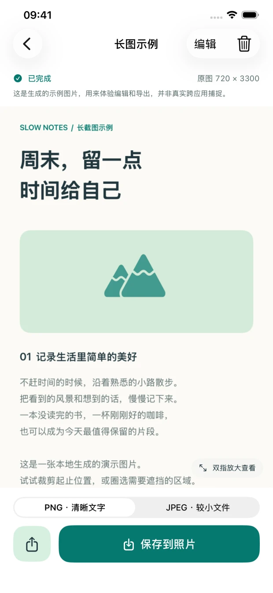

01
从系统开始
打开续页的捕捉按钮，在 iOS 系统面板选择续页并开始广播。系统会倒计时，并保留捕捉指示。

App 实际模拟器界面 · 内容为本机生成示例
01 / 三步，把内容留下
适合保留连续的长文章、清单与聊天内容。整个过程由你开始、滚动和结束。
打开续页的捕捉按钮，在 iOS 系统面板选择续页并开始广播。系统会倒计时，并保留捕捉指示。
切到目标 App，让起始画面稳定，再上下滑动。前后画面保留重叠，等图片加载好再继续。
通过系统指示结束捕捉，回到续页查看结果。裁掉多余内容，遮挡隐私，再保存或分享。
屏幕上的通知也可能被捕捉。开始前可开启专注模式，分享前请检查内容。查看完整操作指南 ↗
02 / 看清楚，再分享
点选下面的工具，看看 App 中的实际界面。这里展示的是明确标注的本机生成示例。
双指放大查看细节，上下浏览整张长图。先看清楚，再决定保留什么。
截图内容不上传到开发者服务器，也不交给云端识图服务。音频和麦克风样本不保存。
只有你主动开启系统屏幕广播，续页才会收到画面。系统捕捉指示全程保留，随时可以结束。
遮挡会写入导出图片。为方便重新编辑，App 内会保留原始画面；删除作品后才会移除这些原图。
留住一段，而不只是一屏
iPhone · iOS 18 或更新版本
当前版本每周免费导出 50 个新作品。
状态核对：2026 年 9 月 15 日。当前测试版英文显示名为 Longlet，中文名为续页；Xuye 是本官网采用的拼音品牌。
开始之前
不需要。你通过 iOS 系统开始屏幕广播后，续页会直接处理系统提供的画面。用户手动滚动，结束后回到 App 查看长图。
可以。续页支持从当前位置向上或向下扩展，回到已捕捉的区域时去重。请平稳滚动并保留画面重叠，快速跳页或动态重排仍可能无法衔接。
无法保证。受保护的内容、动画、重复画面、缺少重叠或快速跳页都可能影响结果。固定照片壁纸也可能出现接缝。请检查首尾与接缝，详细边界见使用帮助。
当前 0.1.5 版本每周免费导出 50 个新作品，失败、取消和同一作品重复导出不会额外扣次数。本版不提供新的购买入口，未来政策以实际版本说明为准。
是的。本官网使用“续页 Xuye”品牌；当前已提交的 App 及 TestFlight 英文显示名仍为 Longlet。请认准青色折页图标，App ID 为 6811703874。